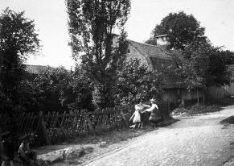
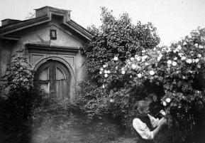
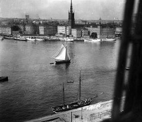
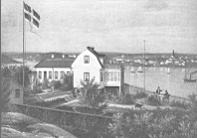
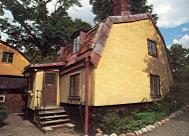
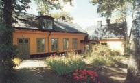
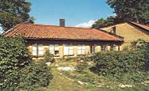

Södermalm i tid och rum. Stockholm

Bastugatan 30. 1912

I trädgården till Bastugatan 30. 1912

Utsikt genom plankfönster, Bastugatan 30, mot Riddarfjärden. 1912

 Bastugatan 30 B. Oljemålning av
Bastugatan 30 B. Oljemålning avC A Rothstein år 1862.
|
  Bastugatan 30 A. Tomten uppläts 1727 och torde strax därefter ha bebyggts med det timrade hus som med flera pålappningar av sten ännu står kvar. Bastugatan 30 A. Tomten uppläts 1727 och torde strax därefter ha bebyggts med det timrade hus som med flera pålappningar av sten ännu står kvar.
|
  Bastugatan 30 B. Tomten uppläts 1736. Stenhuset i norr uppfördes 1770 eller strax därefter. Verandan och envåningslängan i västra tomtgränsen tillkom 1861. Bastugatan 30 B. Tomten uppläts 1736. Stenhuset i norr uppfördes 1770 eller strax därefter. Verandan och envåningslängan i västra tomtgränsen tillkom 1861.
|
  Bastugatan 30 C. Byggnaden uppfördes ca 1860 som uthus för ett projekterat stort arbetarbostadshus, som inte förverkligades. Ombyggdes till bostad 1968. Detta var kompositören Allan Petterssons sista bostad. Bastugatan 30 C. Byggnaden uppfördes ca 1860 som uthus för ett projekterat stort arbetarbostadshus, som inte förverkligades. Ombyggdes till bostad 1968. Detta var kompositören Allan Petterssons sista bostad.
|
Bastugatan 30 B
Författaren Staffan Tjerneld har uppgivit att i Bastugatan 30 bodde fram till 1900-talet en dam som var en länk mellan äldre och nyare tider på Mariaberget. Hon hette Frederique Stenkvist och föddes här 1863 och kom att tillbringa hela sitt liv på samma plats. Hennes far var vice värd åt fastighetsägaren kronokomrnissarien Isak Sandahl, Hon kom in vid posten där hon arbetade till sin pensionering. Hela Mariabergets krönika hade tant Frederigue i huvudet och hon kunde trolla fram en oändlig rad minnesbilder; som tyvärr inte finns nedtecknade, Tjerneld berättar också följande:
Till Sandahlska gården kom en dag en ung man som inte bara såg mycket bra ut utan dessutom var skrudad i bonjour och sombrero, en klädsel som stack av mot den gängse på Mariaberget. Han slog sig ner i huset, varifrån man snart dagligen hörde sång och musik. Mannen var nämligen tonsättare och hette Ture Rangström. Att få upp flygeln i våningen var inte det lättaste, till slut blev det ingen annan råd än att slå hål på väggar och golv, vilket säkert inte gjorde de kalla rummen varmare...
Många elever sökte sig till Rangström för att lära sig sjunga. Flera av dem blev kända operaartister. Och många vänner kom och slog sig ner på verandan med den makalösa utsikten. Särskilt stor var tillslutningen vid födelsedagsfesterna som började åtta på kvällen och slutade fem på morgonen.
Många av Ture Rangströms mest kända kompositioner kom till på Mariaberget med den inspirerande utsikten över Riddarfjärden. Efter Rangströms tid i huset kallas gården för Rangströmska gården.